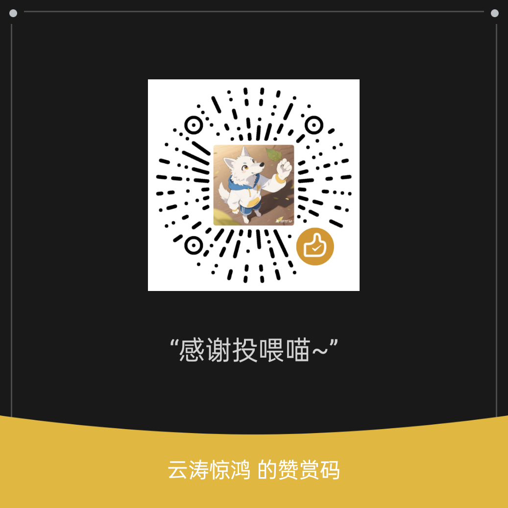

大多数「主动消息」插件做的是定时群发同一句文案，结果是被当成广告。微光想解决的是另一件事：让机器人真的接得上话。
生成时会读取这个群的最近聊天记录与长期记忆，所以每个群收到的话都不一样，也不会和你上一条重复。
只有群真的冷下来了才有资格开口。触发前先过静默时段、每日上限、冷却、与最后一条真人消息的间隔四道闸门。
长期记忆单独落库：谁下周要出差、群里在筹备什么、谁不太能吃辣，下次开口时会被合理地带进上下文。
开了「即时搭话」之后，群友一发消息就掷一次骰子，命中就隔几秒自然接一句——概率你说了算。
只跟踪群聊、忽略机器人自己转发的内容、昵称池兜底。微光全程不拦截消息、不打断事件传播。
点任意一步看它在做什么。
下面每一道都是真实判定逻辑。关掉闸门（变成红色）就代表这道条件拦住了这次发言。
两个插件装在一起最怕的是互相打架、或者更糟——把匿名内容泄露出去。微光从数据入口做了三重隔离，不需要对方配合。
匿名投稿的原始消息走的是私聊。微光默认完全不开私聊通道，所以在数据层面根本接触不到投稿原文，不存在反匿名化的可能。
树洞类插件是靠机器人账号把内容转发到群里的，发送者就是机器人自己。这一条规则把转发帖整体挡在统计之外——不会让树洞每发一帖就把空闲计时器清零，空闲唤醒依然能正常触发。
把树洞用的昵称池填进配置（如 番茄,苹果,橘子），命中即跳过；留空时按内置的「【昵称】正文」格式识别。这类内容不会进记忆库，也不会进生成提示词。
微光全程不调用消息拦截、不打断事件传播，所以不会影响树洞或任何其它插件的正常工作。两者可以同时运行，互不干扰。
基于 AstrBot 原生插件 Pages 机制，在插件详情页直接打开。粒子网络背景、跟随明暗主题、实时倒计时。
需要 AstrBot 4.24.2 或更高版本——4.24.2 起才支持插件自带 Pages 面板。
在 AstrBot 的 data/plugins 下克隆即可，插件本身没有任何第三方依赖，不需要额外 pip 安装。
cd AstrBot/data/plugins git clone https://github.com/yuntaojinghong/astrbot_plugin_proactive_care.git
重载插件后进入插件配置。默认总开关是关闭的，且生效群号列表为空——也就是装完不会立刻在任何群里说话。
basic.group_whitelist = 1001,1002 # 建议先只填一个测试群 basic.enabled = true # 确认规则无误后再打开
高级 → 演练模式 打开后，所有主动消息只写进日志和面板，不会真的发出去。你可以先看看它在什么时机、打算说些什么，满意了再关掉。
advanced.dry_run = true # 只生成不发送 # 面板「日志」页可以看到每次的触发原因与生成的文案
插件完全开源、永久免费。如果它让某个群重新热闹了起来，可以让作者知道。
最省力的支持方式。Star 多了，插件更容易被需要它的人搜到。
打开 GitHub 仓库[微光] 开头的记录请作者喝杯咖啡。金额随意，心意为主。
